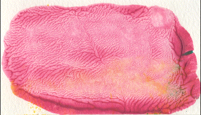

|
| Here are some examples of Decalcomania from the history of art. |
| Fractal patterns in paint are easily made by a process called decalcomania. Here are the steps. |
| Put some fairly viscous paint -- finger paint or oil paint from a tube work well -- on a piece of stiff paper fastened to a table. |
| Cover the paper with another piece of paper |
| Flatten and spread the paint by applying pressure to the top sheet |
| Pull the sheets apart. |
| As the sheets separate, paint adheres to both the top and bottom, forming ridges between the papers. |
| With increasing distance between the papers, the paint ridges coalesce and a branching pattern appears. |
| As more and more ridges coalesce, a dendritic fractal forms. Here is an example. Click the picture to enlarge in a new window. |
|  |
| Here are some examples, including recent student projects. |